Sightseeing
See East Africa's top wonders destinations for sightseeings.
Burundi
Top destinations for sight in Burundi

A powerful cultural site near the historic royal courts,
Gishora preserves Burundi's royal drumming (ingoma) tradition.
Performances are ceremonial, rhythmic and deeply symbolic;
drums are woven into history, storytelling and rites.

Karera offers scenic cascades,
lush walking trails and community run conservation initiatives in northern Burundi.
The falls are a local landmark tied to seasonal gatherings and eco tourism development.
Trekking here gives excellent birdwatching and a glimpse into rural Burundian life.
Expect basic village hospitality and dishes like grilled fish,
plantains and manioc. Trails get muddy in rains so good footwear is recommended.
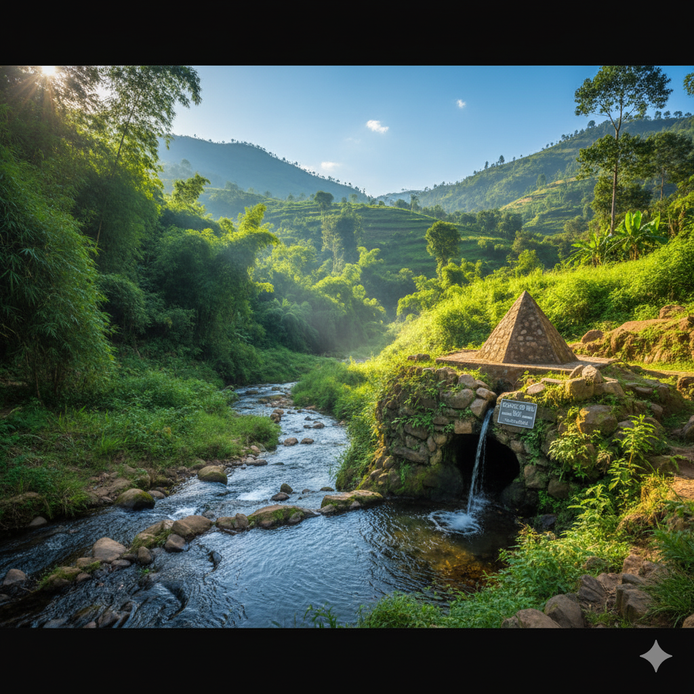
a look at the longest distance river Nile source which is in Burundi, it is place is now attracting more vistors. If you are more intrested in history about river Nile

Rusizi National Park is among of the top destination and most beautiful reverse, that is situated near Bujumbura town along side river Rusizi that flows into lake Tanganyika. The park is recognized for it is many extraordinary wildlife such as crocodiles, hippopotamuses, antelops, snakes, and many varieties of birds. Tourists can experience its beauty by being guided by the boat tours and watch the animals close.
Kenya
Deep Dive
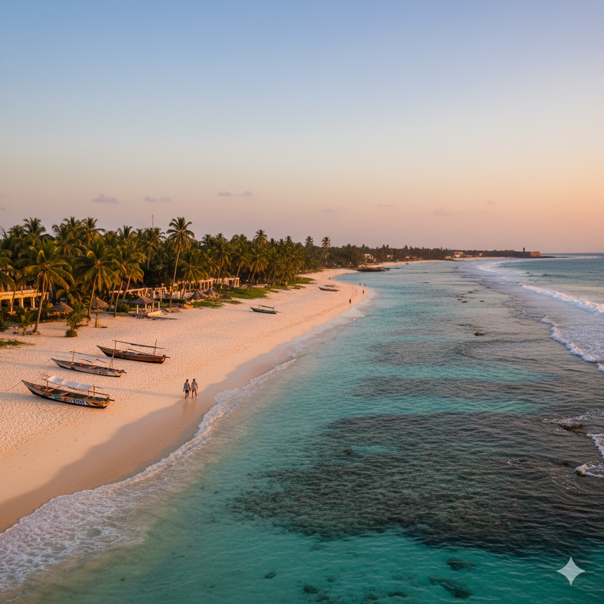
A palm fringed stretch of white sand south of Mombasa, Diani blends laid back beach life with rich Swahili heritage. Stroll coral fringed shores, explore dune forest trails and discover local Digo crafts. Cuisine centers on fresh seafood: grilled fish, prawns and coconut based stews, plus Swahili pilau and samosas. Best visited outside the long rains (June to October is ideal). Don't miss snorkeling the coral gardens or a visit to Colobus Conservation

Chale Beach is located southern coastal of Kenya, it is a hiden tropical mysetirious. Due to its very fine and soft white sand , crystal clear turquoise water, and quite environment makes it be a good place for fun, relaxation, swimming etc. The forest with palm trees and blend of colors offers a calm and fantastic vibe for relaxation.
Parks
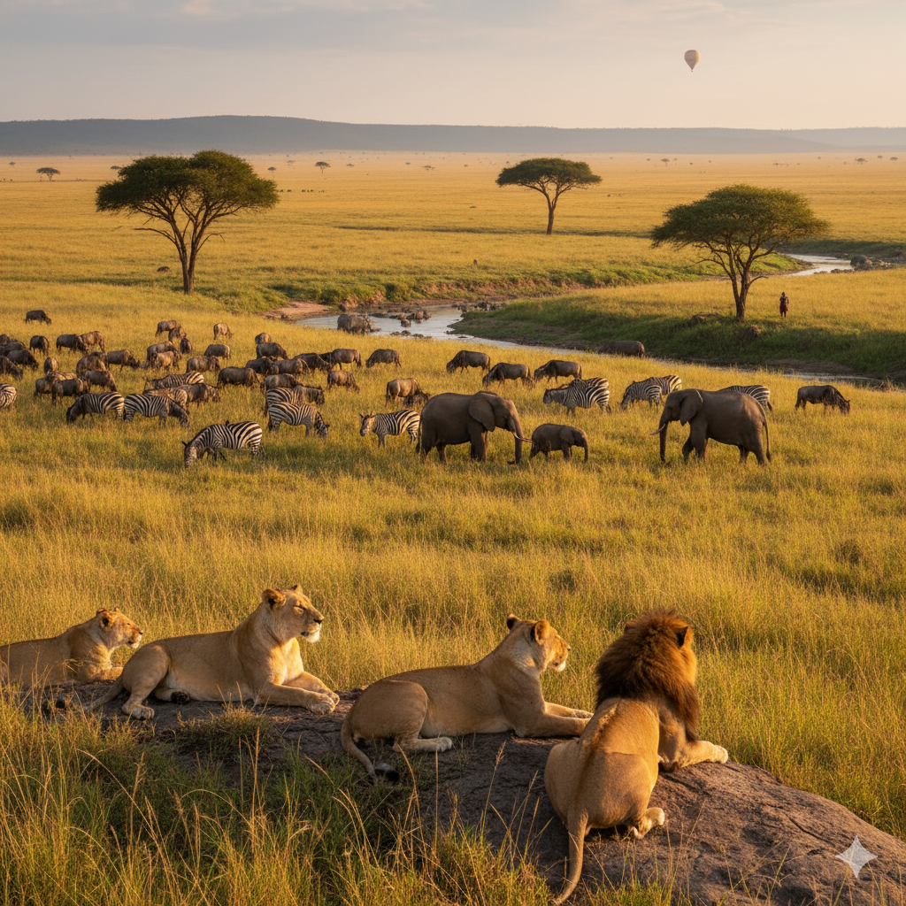
Nairobi National Park gives one of the most rarest sight with wild animalin the middle of city. It is gives a good exemple of how nature and mordern life living together. You can find their giraffes, rhinos, zebras, and lions within the city.
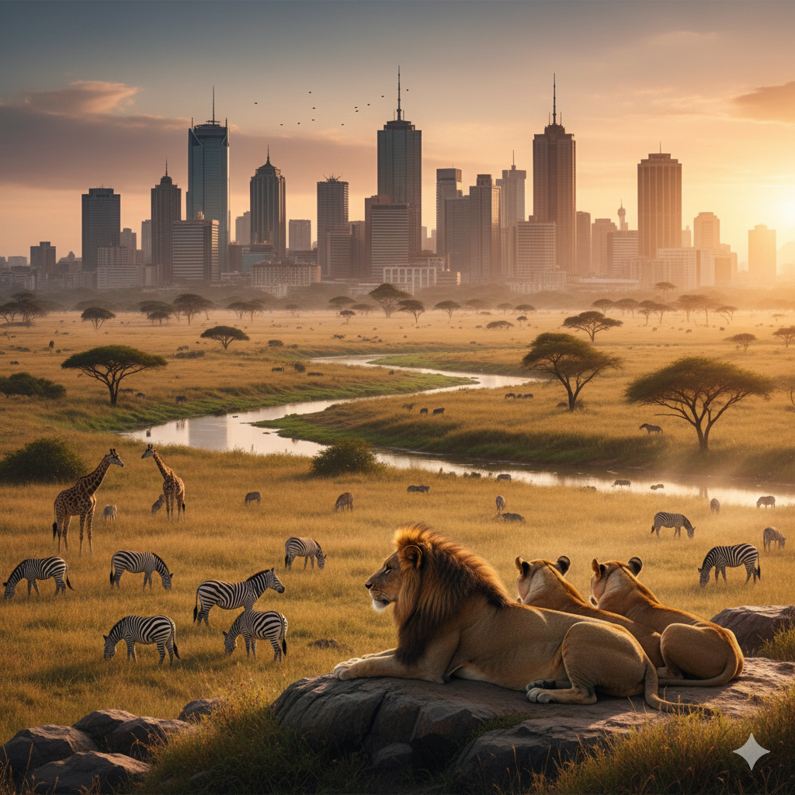
Maasai Mara National Reseve is known as most of worldest famous wildlife with an amazing and infinite plains. Tourist can see how the thousands of wildbeest migrate and zebras crossing the river mara. It is a an increadible migration to witness as a vistors. This is a place you can experience the maasai culture when you are surrounded by a specutular view in East African and whole africa.

Tourist enjoying the safari tour at Maasai Mara National Reverse.
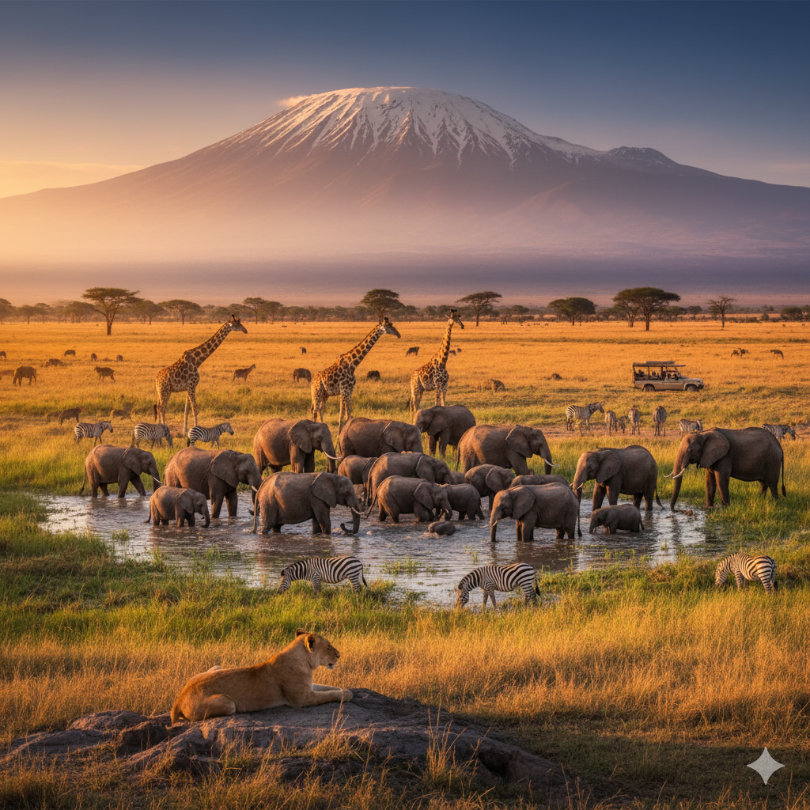
Due to its wildlife photography and calm reflection cause by its landscape of mount kilimanjaro with the close up of elephants. it is one of the best parks in africa and known for it is acacia trees and open plains.
Rwanda
Festivals
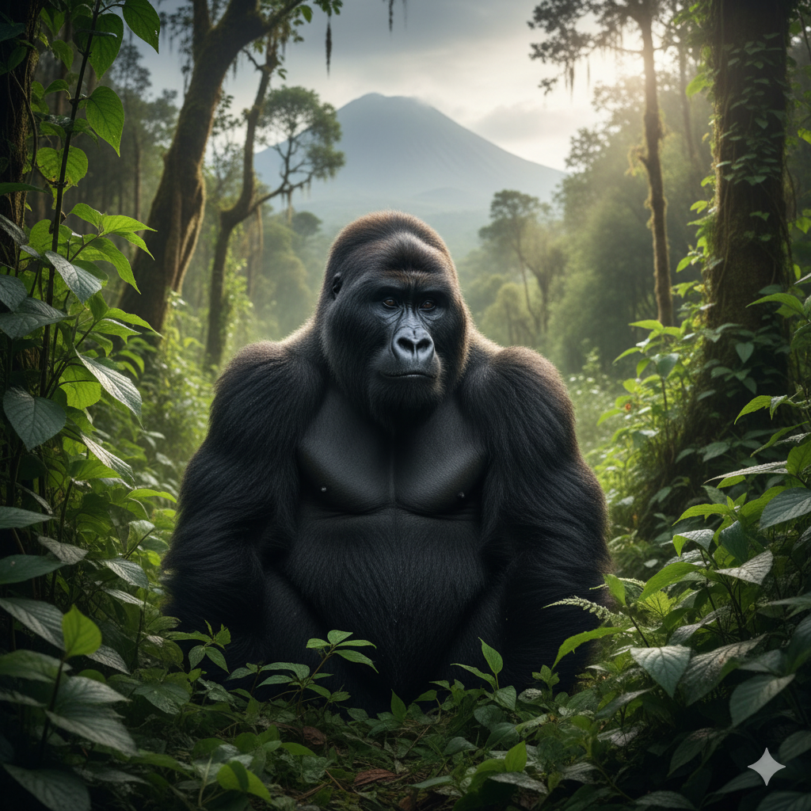
A yearly celebration that names newborn mountain gorillas, Kwita Izina marries traditional Rwandan naming ceremonies with wildlife conservation. The festival features cultural performances, community outreach and international conservation partnerships. Visit to witness music, dance and community stalls; festival dates vary so check the calendar and book early
Parks
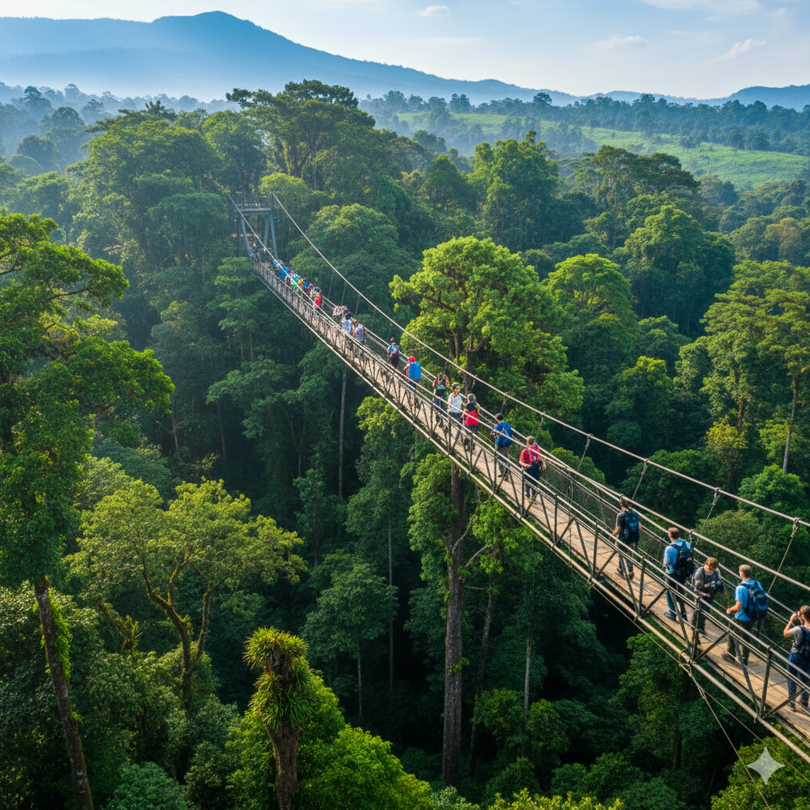
One of Africa's premier montane rainforests, Nyungwe is famed for chimpanzee and colobus monkey encounters, birdlife and a dramatic canopy walkway. The forest is woven into local traditions and modern community based conservation. Nearby tea plantations offer cultural visits and local cuisine features banana and cassava dishes plus Rwandan coffee. Trek early for wildlife sightings and combine chimp tracking with the canopy walk for an unforgettable perspective.
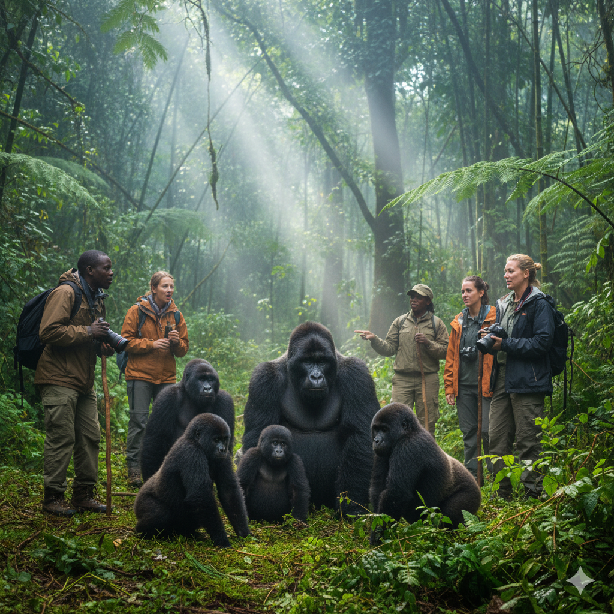
Nestled on Rwanda's Virunga volcanic chain, this park is home to endangered mountain gorillas and golden monkeys and is the site of Dian Fossey's research legacy. Gorilla trekking here is intimate and strictly regulated; permits are limited. The highland setting yields hearty local dishes and excellent coffee grown on volcanic slopes. Book gorilla permits well in advance and follow park health and distance rules to protect the primates.
Tanzania
Coastal Wonders

At Unguja's northern tip, Nungwi pairs turquoise water with a living dhow building tradition. Centuries of Arab, Persian and Indian influence shape the local culture, music and spice rich cuisine: seafood curries, pilau and the famous urojo. Enjoy sunset dhow cruises, turtle projects and vibrant beach bars. Note strong tidal variations in some spots; plan swimming and snorkeling around high tide.

Ras Kutani is a scenic stretch of the East African coastline characterized by white sand, warm turquoise water, coral reefs and a relaxed coastal community. It showcases coastal biodiversity including mangroves, reef fish and coastal birds, and supports typical seaside activities
Parks
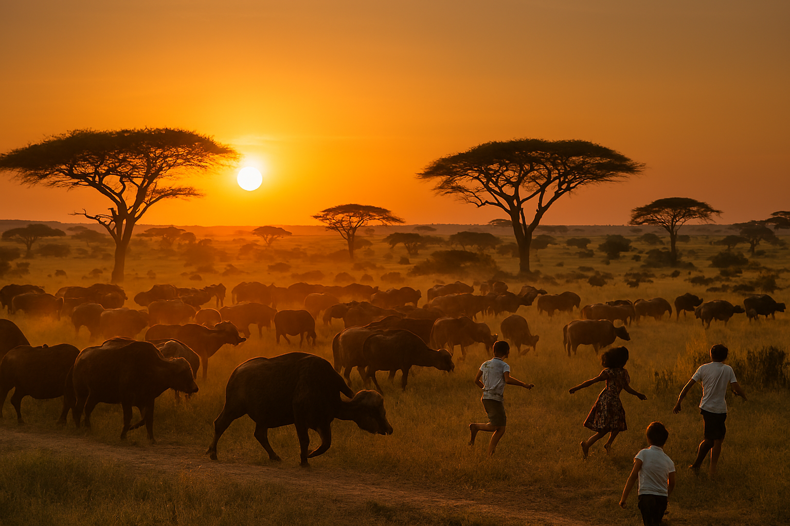
Vast savannahs, dramatic predator action and the Great Migration make the Serengeti an iconic safari destination. The ecosystem has long supported pastoralists such as the Maasai, and modern conservation balances wildlife protection with local livelihoods. Safari camps serve regional favorites like nyama choma, ugali and seasonal produce. Best time depends on migration patterns; combine a Serengeti trip with Ngorongoro Crater for varied habitats and wildlife viewing
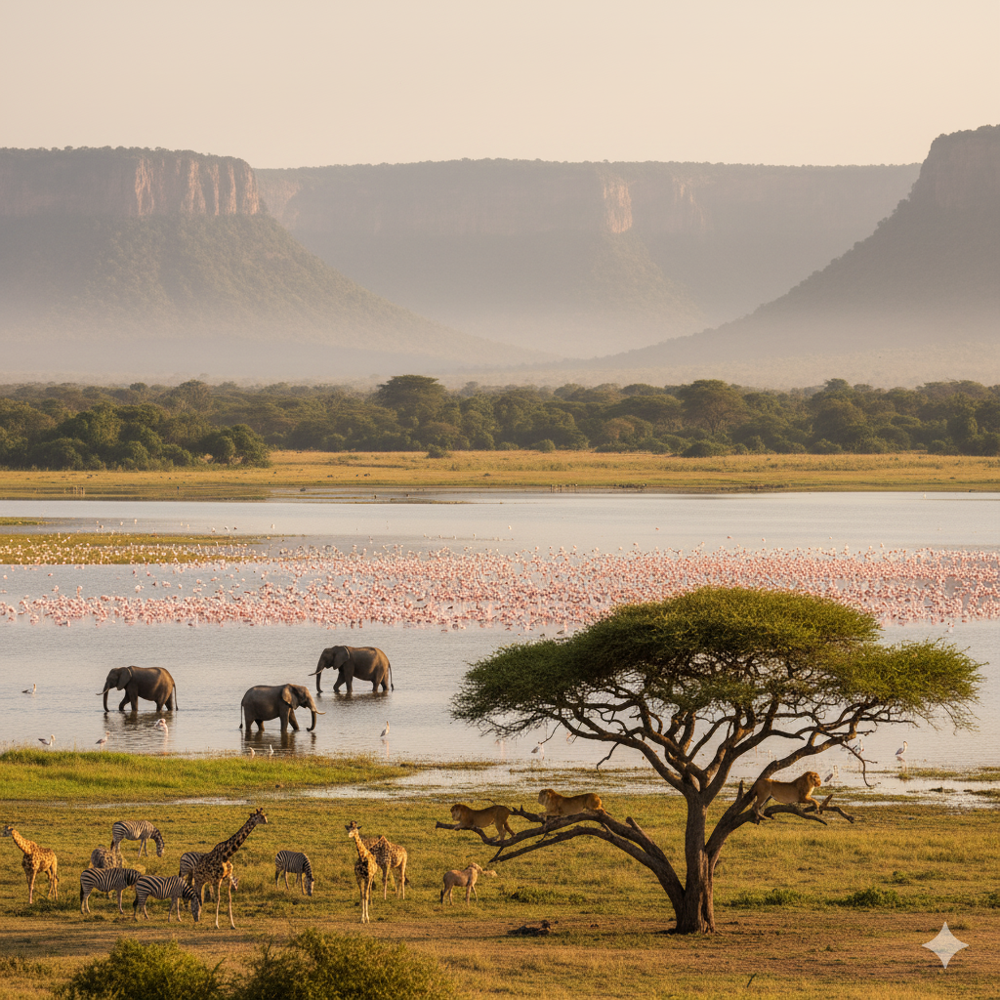
Relatively small but ecologically diverse park in northern Tanzania that includes a shallow alkaline lake, seasonal flooding, groundwater forest and rim-woodland habitats. Wildlife and features: Famous for large bird populations (including flamingos when conditions are right), tree-climbing lions, baboons, elephant herds, buffalo and a variety of antelope. The lake and forest create strong birdwatching opportunities
Uganda
Parks
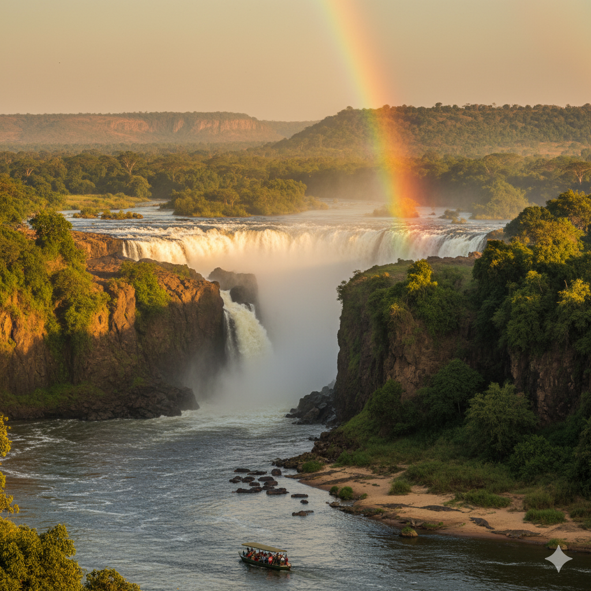
One of Uganda's largest and most iconic parks, centered on the Victoria Nile where the river is forced through a narrow gorge that creates a dramatic, powerful waterfall. The river, floodplains and woodland support a rich set of wildlife.
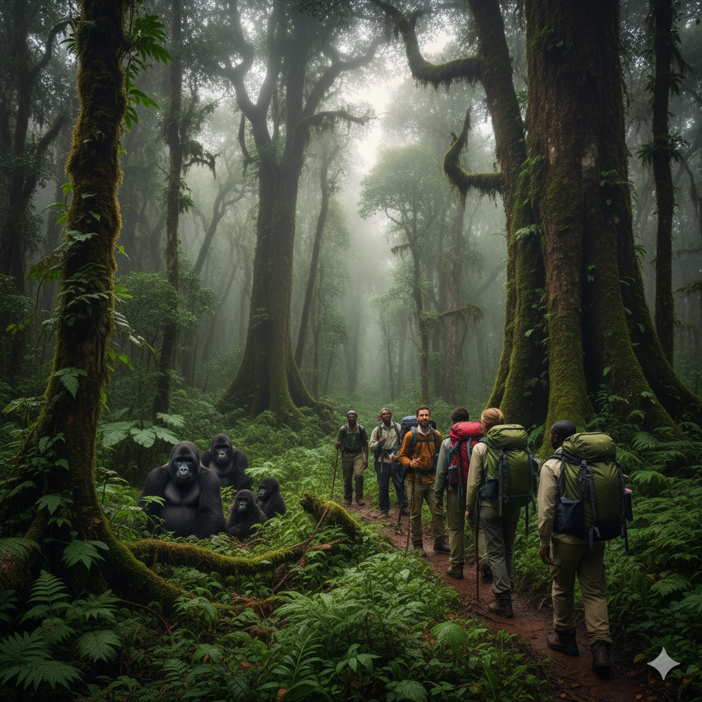
A dense montane rainforest in southwestern Uganda, Bwindi is a cornerstone of gorilla conservation and offers unforgettable trekking opportunities. The forest holds rich local Batwa and Bantu cultural history and community based tourism supports conservation and livelihoods. After the trek, sample Ugandan matooke, luwombo and fresh coffee. Gorilla permits are limited so book in advance and follow park rules to minimize impact on these fragile populations.
Cultural Heritage & Cuisine
Maasai Culture(Kenya & Tanzania)
The Maasai are a semi nomadic pastoralist people renowned for beadwork, colorful dress and age set ceremonies like the adumu jumping dance. Cultural visits offer insights into livestock based life, traditional songs and crafts. Traditional cuisine centers on milk and meat and now more staple grains like maize (ugali). Choose community run and ethically managed visits so tourism benefits local people and respects sacred practices.
Swahili Culture
Swahili culture (coastal East Africa) brief cultural and culinary profile Origins and influences: Swahili culture developed along the East African coast through centuries of trade across the Indian Ocean and blends Bantu foundations with strong Arabic, Persian, Indian and later European influences.
The Great Lakes Region
The Great Lakes region includes a chain of large lakes such as Victoria, Albert, Edward, Kivu and Tanganyika and a mosaic of highland and rift-valley ecosystems. The area supports high population densities in parts, rich agricultural systems and unique biodiversity such as mountain gorillas in the Virunga area.
Shared food staples and ingredients: Starchy staples include plantain or banana (matoke), cassava, sweet potato, yams, millet and maize for ugali or posho, and rice in some areas. Beans and legumes are a major protein source across the region. Freshwater fish such as tilapia and Nile perch are important where lakes and rivers are accessible
Back to Home